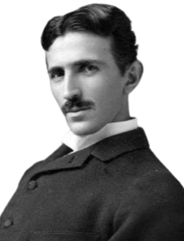

Никола Тесла(1856-1943)

Никола Тесла, сербский американец, наиболее известный своей работой в области современной системы электроснабжения и исследований переменного тока. Тесла на начальном этапе работал у Томаса Эдисона — разрабатывал двигатели и генераторы, но позже уволился. В 1887 он построил асинхронный двигатель. Эксперименты Теслы дали начало изобретению радиосвязи, а особый характер Теслы дал ему прозвище «сумасшедшего ученого». В честь этого величайшего ученого, в 1960 году единицу измерения индукции магнитного поля назвали 'теслой'.